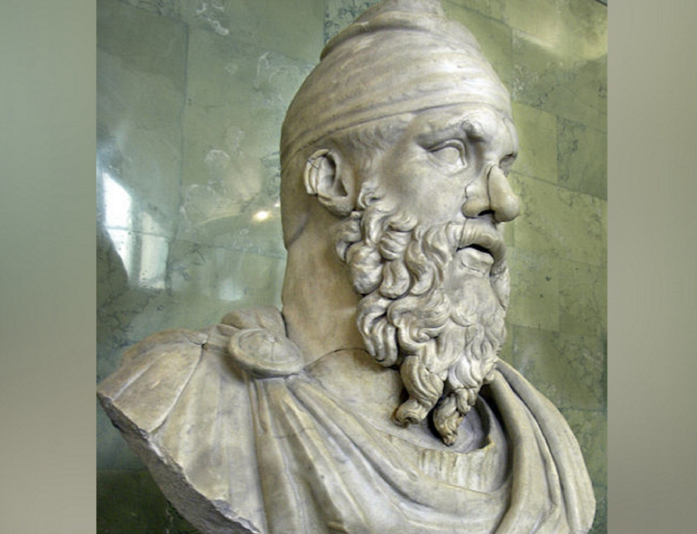
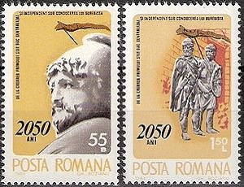

Regii daci
Dacia era în Antichitate țara locuită de geto-daci, care erau împărțiți într-un număr mai mare de state, iar ei ocupau un teritoriu cuprins între: râul Tisa (vest), râul Nistru și Marea Neagră (est), Dunărea (sud) și Carpații Păduroși (nord). În anumite părți chiar depășeau aceste hotare: spre est peste Nistru, „înaintând până spre Bug”, iar spre vest, „ajunseră până la Dunărea panonică”.
Regatul dacic a ajuns la cea mai mare întindere a sa în timpul regelui Burebista, având ca hotare: țărmul Mării Negre și Bugul - spre est, Cadrilaterul boem, Dunărea panonică și Morava - spre vest, Carpații Păduroși - spre nord, iar Muntele Haemus (lanțul Balcanilor) - spre sud. Capitala regatului era orașul Argedava.
Conform informațiilor rămase de la Strabon, dacii locuiau în zona muntoasă până în partea superioară a Dunării, denumită Danubius - de la izvoare și până la Drobeta, iar geții stăpâneau partea de la cataracte, denumită Istru până la vărsarea acesteia în Marea Neagră. Tot el spune că „dacii au aceeași limbă cu geții” și că „elenii i-au socotit pe geți de neam tracic”. De asemenea, Dio Cassius ce spune că regele getic Burebista i-a zdrobit pe boii și tauriscii conduși de regele Critasir, afirmă că Critasir a fost învins de daci, și păstrează denumirea luptătorilor armatei de geți sau daci pentru a denumi popoarele de la Nord.
Dromihete - 320-280 î.Hr.
Dromihete a fost conducătorul geților din nordul Dunării în jurul anului 300 î.Hr. Cronicarii antici au consemnat victoria geților conduși de Dromihete împotriva lui Lysimachus, Regele Traciei, fost general al lui Alexandru Macedon. Lisimah organizează în anul 300 î.Hr. o expediție împotriva lui Dromihete, care sprijinise lupta coloniilor elene de pe litoralul Mării Negre. Campania condusă de Agatocle, fiul lui Lisimah, se încheie cu un eșec total: armata elenistică este înfrântă iar Agatocle făcut prizonier. Opt ani mai târziu, Lisimah conduce personal o nouă ofensivă în ținuturile din nordul Dunării. Undeva în Câmpia Munteană, armata lui Lisimah cade în cursă, monarhul fiind făcut prizonier și dus la Helis, cetatea de scaun a lui Dromihete. |
●Burebista - 82-44 î.Hr.
Conform spuselor lui Strabon, Burebista a fost un lider politic și militar impresionant, al ținuturilor locuite de geto-daci: „Ajuns în fruntea neamului său care era istovit de războaie dese, getul Burebista l-a înălțat atât de mult prin exerciții, abținere de la vin și ascultare față de porunci, încât în câțiva ani a făurit un stat puternic și a supus geților cea mai mare parte din populațiile vecine, ajungând să fie temut chiar și de romani.”
Fiind un desăvârșit lider și strateg militar a reușit unirea triburilor geto-dacice, iar cu ajutorul sfatului său de tarabostes și cu ajutorul marelui preot, Deceneu, a reușit să introducă o serie de măsuri administrative care au avut un rol important în consolidarea și stabilitatea statului, a recrutat oameni noi pentru administrarea agriculturii, strângerea dărilor, supravegherea muncilor obștești obligatorii, făcând, astfel, posibilă realizarea sistemului de fortificații în Dacia, a introdus sistemul de legi beligines, iar pe plan spiritual și-a întărit propriul cult. Prin acțiunile sale ofensive a reușit îndepărtarea pericolului reprezentat de celții situați în sud și în vest, supunerea bastarnilor în est și cucerirea cetăților grecești de la malul Pontului Euxin, întinzându-și regatul de la Pontul Euxin, în est, până la Danubis în Câmpia Panonică, în vest, și de la Munții Haemus, în sud, până la mlaștinile Pripetului, în nord, devenind un potențial adversar de temut al puternicei Republici romane.
|  |  |  |
Întemeierea statului dac
Conform istoricului Iordanes, Burebista își începe domnia în jurul anul 82 î.Hr., dată care a fost calculată în funcție de momentul venirii la putere a lui Sylla la Roma. Burebista a fost stăpânul unui teritoriu în hinterlandul Histriei, având capitala la Argedava, iar pe măsură ce stăpânirea sa s-a întins și de-o parte și de alta a Dunării este posibil să-și fi mutat capitala în Câmpia Munteană, la Argedava de la Popești, pe râul Argeș. Această mutare s-a realizat din rațiuni politice și strategice deoarece pe măsura măririi teritoriului său spre vest, Argedava Dobrogeană nu putea controla teritoriul ocupat, iar din punct de vedere militar, fiind amplasată pe malul drept al Dunării, ar fi îngreunat foarte mult acțiunile de apărare. În acest moment au loc, probabil, desele treceri ale fluviului, pe care le amintește Strabon, Căci trecând plin de îndrăzneală Dunărea și jefuind Tracia - până în Macedonia și Iliria..., cu scopul de a-și consolida controlul spațiului de la sud de Dunăre până la Munții Haemus. Astfel limitele de nord, est și sud ale regatului fiind relativ stabile, cu triburi geto-dace în nord, cu regatul lui Mitridates al VI-lea în est și crestele Balcanilor în sud, iar pentru a consolida granița vestică a pornit o ofensivă împotriva scordiscilor, stabiliți în jurul anului 278 î.Hr. în vecinătatea muntelui Scordus. Această victorie de prestigiu asupra unui neam celtic se presupune că i-ar fi înlesnit procesul de uniune cu triburile dacice din arcul intracarpatic, amenințate de triburile celtice ale boiilor și a tauriscilor din Câmpia Panonică.
Cotiso - ?-29 î.Hr.
Cotiso a fost un rege dac care a stăpânit în zona munților dintre Banat și Oltenia, cu o oarecare aproximație, de la începutul domniei lui Augustus (27 î.Hr.) și despre care autorul antic Florus ne spune acesta obișnuia să atace garnizoanele romane aflate pe teritoriul din sudul Dunării, atunci când aceasta era înghețată. După victoria lui Octavian în războaiele civile, romanii au luat măsuri de pedepsire a regelui dac, decapitându-l și transportând capul acestuia la Roma unde a fost arătat mulțimii ca asigurare că armata romană nu va mai fi atacată de armata dacă. |
●Decebal - 87-106 d.Hr.
Dacia s-a aflat la apogeul puterii sale sub regele Decebal. Deși mai restrâns ca arie geografică decât Regatul lui Burebista - cuprinzând Transilvania, Banatul, Oltenia, centrul și sudul Moldovei, noul stat era mai puternic și mai bine organizat. Limitele statului dac în timpul lui Burebista au fost: în nord, Carpații Păduroși; în est, Pontul Euxin; în sud, munții Haemus (Munții Balcani); în vest, Dunărea Mijlocie. Progresele înregistrate în acest timp de societatea dacică erau multiple și importante: o populație numeroasă și grupată în jurul multor dave în care pulsa o vie activitate economică, legături comerciale cu lumea greco-romană, o cultură înfloritoare cu puternice elemente originale. |
●Personalitate
Regele Decebal a avut mai multe războaie cu romanii, care îi vor recunoaște abilitățile militare și politice. La începutul secolului III, la aproape 150 de ani de la afirmarea lui Decebal, istoricul roman Dio Cassius făcea regelui dac următorul portret elogios: Era foarte priceput în ale războiului și iscusit la faptă, știind să aleagă prilejul pentru a-l ataca pe dușman și a se retrage la timp. Abil în a întinde curse, era viteaz în luptă, știind a se folosi cu dibăcie de o victorie și a scăpa cu bine dintr-o înfrângere, pentru care lucru el a fost mult timp un potrivnic de temut al romanilor. Pe un vas funerar descoperit la Sarmizegetusa Regia se poate citi textul "DECEBALVS PER SCORILO". Unele interpretări îl consideră în limba dacă, posibilul sens fiind de Decebal fiul lui Scorilo, altele în latină, traducerea fiind Decebal prin Scorilo. Alții cred că e vorba de o simplă marcă de olar.
●Urmări
O mare parte a teritoriului statului dac (Transilvania, Banatul și Oltenia) a fost transformată în vara anului 106 în provincie romană numita Dacia Felix, cu capitala situată la 40 de km de vechea capitală (incendiată în războiul dac din 105-106), purtând numele de Ulpia Traiana Dacica Augusta Sarmisegetusa. Muntenia si sudul Moldovei au fost încorporate în provincia Moesia Inferior. După înfrângerea dacilor, Traian a organizat la Roma o festivitate mare și costisitoare, de 123 de zile. Zeci de mii de daci au fost duși în sclavie la Roma, alte zeci de mii de daci au fugit din Dacia Romană pentru a evita sclavia. Detaliile celor două conflicte, grele și sângeroase au fost relatate de istoricul roman Dio Cassius, dar cele mai bune comentarii sunt basoreliefurile de pe Columna lui Traian, construită în Roma de Apolodor din Damasc (în 113), precum și de pe monumentul triumfal de la Adamclissi, din Dobrogea.
Cu ajutorul foarte bogatului tezaur al regatului dac și cu aurul extras din minele de aur de la Roșia Montana, Imperiul Roman se va redresa financiar. Astfel, deși capitala provinciei romane (coloniei) era Ulpia Traiana Sarmisegetusa, cel mai important oraș din teritoriu era Apullum (Alba Iulia), oraș prin care trecea aproape întreaga cantitate de aur ce lua drumul vestic. Tot Dacia va mai oferi Imperiului mai multe legiuni militare alcătuite exclusiv din daci care vor lupta în multe colțuri ale Europei.
 |
 |
 |
 |